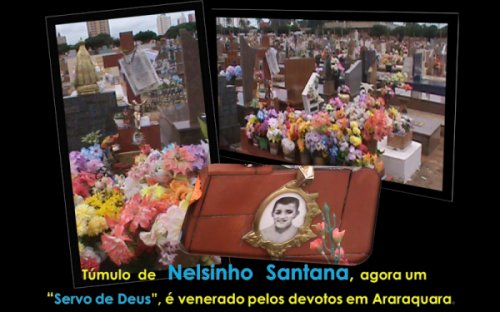
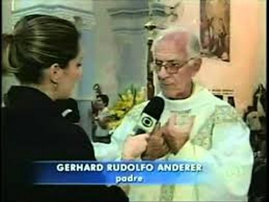
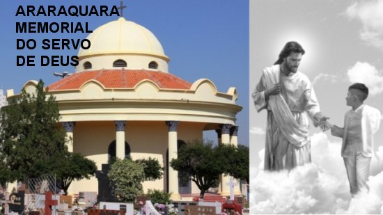
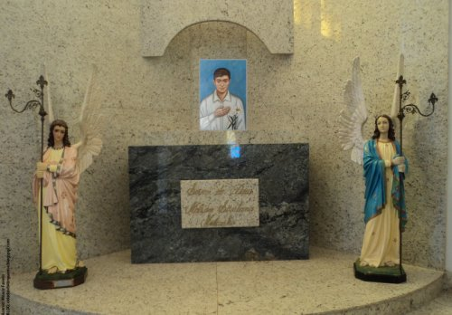
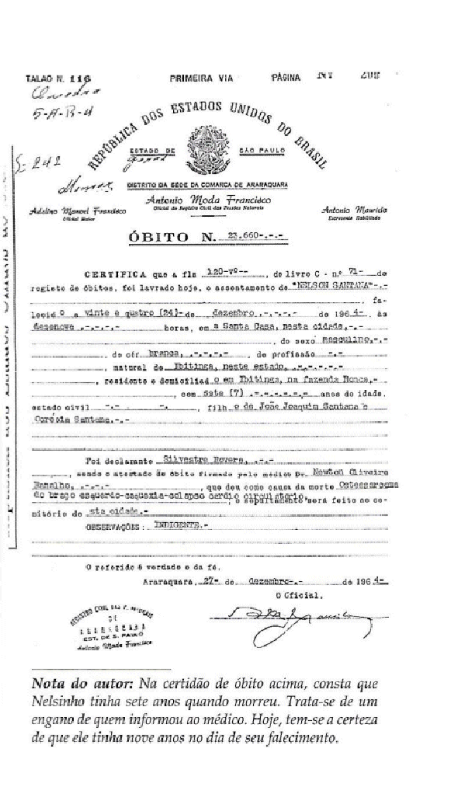

NO PARAÍSO DIVINO
MORTE DE NELSINHO
No dia 25 de Dezembro, à tarde, depois dos trabalhos de Natal em Fernando Prestes, o Padre Rudolfo voltando a Comunidade Redentorista em Araraquara, viu o Padre Faria sair com o “Ritual” nas mãos. Ele então perguntou ao porteiro para onde ia o Padre? E o porteiro informou que ele ia fazer o enterro do Nelsinho, que tinha falecido às 19 horas do dia 24, como ele mesmo havia predito. Padre Rudolfo entrou na Igreja de Santa Cruz e fez orações, suplicando a misericórdia de DEUS para o Nelsinho e depois subiu para a Comunidade, porque devia preparar os seus objetos, pois havia recebido ordem de no dia seguinte, 26 de Dezembro, retornar a sua Comunidade, no Santuário de Nossa Senhora da Penha, no Bairro da Penha, em São Paulo. Embora desejasse, não teve tempo de procurar a Irmã Genarina Gecchele, na Santa Casa de Misericórdia, para se despedir e conhecer as últimas notícias do Nelsinho.


Padre Rudolfo então quis saber do funcionário do Cemitério, como ia conseguir uma lembrança do Nelsinho, a quem tinha grande afeto e amizade. O rapaz teve uma idéia. Convidou o Padre a acompanhá-lo até a sala dos arquivos, e pegou a Certidão de Óbito do Menino, fez uma xérox e deu ao Padre. Desde aquela data essa Certidão tem sido copiada e até plastificada numa quantidade incontável de vezes, para atender a todos aqueles que têm fé.
UM PATRÃO QUE É SANTO
Os pais de Nelsinho, como já mencionamos, trabalhavam como agricultores numa propriedade agrícola. E tendo muitos filhos, apesar de ter um salário compensador, as despesas da família era muito grande. Com o problema do Nelsinho o controle financeiro entrou em pane, e toda a família passou a sofrer as dificuldades com o sofrimento do Menino. Consultas e visitas de médicos, na cidade e na Fazenda, as viagens se multiplicaram, os gastos com consultas, medicamentos, radiografias, internamentos, obrigou os pais a vender o que podiam, para enfrentar as despesas. Contudo, a Providência Divina não se omitiu. O patrão dos pais do Nelsinho era o senhor Otávio Pereira, um cristão de verdade, homem sério e compenetrado das suas responsabilidades. Observando aquela situação, logo assumiu todas as despesas, inclusive fazendo questão de pagar semanalmente, as viagens de Ibitinga a Araraquara, ida e volta.
UM PUNHADO DE FOTOCÓPIAS
A Irmã Elizabete era uma
Carmelita muito trabalhadora e estava internada no Hospital num estado
gravíssimo, pois a tuberculose ocupava integralmente um dos pulmões, e o
organismo não reagia favoravelmente aos remédios e aplicações médicas que lhe
eram ministradas. O Padre Morgado, que era o Pároco Redentorista do Santuário de
NOSSA SENHORA DO PERPÉTUO SOCORRO, em São João da Boa Vista, aproveitando a
visita do Padre Rudolfo solicitou que ele fosse visitar a Irmã no Hospital,
depois de lhe contar a situação dela.
pulmões, e o
organismo não reagia favoravelmente aos remédios e aplicações médicas que lhe
eram ministradas. O Padre Morgado, que era o Pároco Redentorista do Santuário de
NOSSA SENHORA DO PERPÉTUO SOCORRO, em São João da Boa Vista, aproveitando a
visita do Padre Rudolfo solicitou que ele fosse visitar a Irmã no Hospital,
depois de lhe contar a situação dela.
O encontro foi alegre e conversaram em clima de muita fé e da imensidão do Amor de JESUS. Depois, Padre Rudolfo contou-lhe a história do Nelsinho e evidenciou as suas reais e admiráveis qualidades. Na continuidade da conversa, o Sacerdote perguntou a Irmã se a fé dela aceitaria se ele fosse buscar uma cópia da Certidão de Óbito do Menino. Elizabete emocionada e com confiança, disse: “Sim, eu quero Padre”. No retorno, Padre Rudolfo e a Irmã entraram em estado de orações. O Sacerdote colocou a Certidão nas costas da Irmã sobre o pulmão doente, e rezou a JESUS: “Sabemos que o SENHOR está aqui. E nós somos três que pedimos: a Irmã, eu e o Nelsinho, que já colocou a mão em TUA manga para puxar. Atende-nos JESUS, por favor, pois o nosso PAI ETERNO vai gostar.”
Momentos depois, Padre Rudolfo se despediu da Irmã e voltou para a sua Paróquia em São Paulo.
Uma semana após este acontecimento, certo dia pela manhã Padre Rudolfo teve uma profunda emoção ao receber um pacote com diversas Certidões de Óbito do Nelsinho e uma mensagem enviada pela Irmã Elizabete: “Padre Rodolfo, já estou em casa. Recebi alta no dia seguinte a oração que fizemos juntos. A médica não encontrou argumentos e não sabia como explicar a repentina cura do meu pulmão e me mandou para casa. Sinto-me perfeitamente bem, sou outra pessoa com disposição e com total bem-estar. Supondo que tenho a licença e o acordo do senhor Padre, mandei fazer este punhado de cópias da Certidão de Óbito do Nelsinho, para serem distribuídas as pessoas necessitadas. Obrigado por tudo, fique com DEUS”.
QUE DIA É HOJE?

Um dia Padre Rudolfo lhe perguntou: “O que lhe aconteceu senhora Amélia? Ultimamente está tão diferente?”
- “Minha catarata está cada vez pior, Padre, não estou conseguindo distinguir mais as pessoas...” Ela respondeu.
Os dias passaram... Dois meses após o fato mencionado, toda Igreja ficou impressionada com a transformação de Dona Amélia: apareceu sorridente, cumprimentando a todos e muito comunicativa, como sempre foi anteriormente.
Cheio de curiosidade, Padre Rudolfo lhe perguntou:
- “Então, Dona Amélia, que beleza! Como se explica esta transformação na senhora?”
Ela respondeu: “Que dia é hoje, Padre?”
- “A senhora sabe que é Natal”. Disse o Padre.
- “Pois é, Padre Rudolfo, ontem foi dia 24, véspera do Natal, lembrança do dia em que Nelsinho partiu para a eternidade e permanece junto de JESUS. Ontem terminei uma fervorosa Novena que fiz para o Nelsinho, pedindo sua preciosa intercessão junto a JESUS, a fim de NOSSO SENHOR, permitir uma limpeza na minha visão. E graças a bondade infinita de JESUS, ELE autorizou e já consigo ver as pessoas. Mas em breve irei ao Brasil, especialmente a São Paulo, para fazer a cirurgia da catarata que me prometeram. E assim, a limpeza do SENHOR nos meus olhos, por intercessão do Nelsinho, estará completa, graças ao bom DEUS”.
E completou a senhora Amélia: “Senhor Padre, não me canso de agradecer, dizendo: Nelsinho, obrigado pelas graças que JESUS concede a todos nós, por sua carinhosa intercessão”.
O MENINO VITOR DA SILVA LEITÃO
Este é também um dos milagres de JESUS, atribuído à intercessão de Nelsinho que foi enviado ao Vaticano, no processo preparatório, para pedido da BEATIFICAÇÃO, como um testemunho maravilhoso e inexplicável. O fato ocorreu em 2007, quando o menino Vitor da Silva Leitão, com a idade de um ano, sofria de uma doença denominada Macroencefalia (crescimento anormal do crânio), e foi curado em Brasília sem qualquer explicação médica sobre a realidade da cura da criança. A família relatou o fato, dizendo que pediu uma cópia da Certidão de Óbito do Nelsinho ao Padre Rudolfo, e a colocaram na cabeça da criança, ao mesmo tempo em que rezaram com muita fé a JESUS, suplicando a intercessão do Nelsinho para a cura do Vitor. E o milagre aconteceu.
SERVO DE DEUS
A senhora Ana Lúcia
Ferreira Frigioni, a Vice-Postuladora da Causa de Beatificação do Nelsinho,
atendendo as formalidades legais, encaminhou os primeiros 
Em 24 de Outubro de 2011, ás 17h30 o corpo do Nelsinho foi exumado na presença de componentes do Tribunal Eclesiástico e da Comissão Histórica para a causa da Beatificação, assim como, estavam presentes familiares, amigos, funcionários do Cemitério, o Médico Legista e o seu auxiliar. Os restos mortais foram colocados em duas caixas, e foi transladado para a Paróquia do Senhor Bom Jesus em Ibitinga, onde foi preparado para ser colocado na cripta da Igreja Matriz. A Santa Missa solene aconteceu no dia 20 de Dezembro de 2011, às 19h30, com a presença do pai, irmãos e familiares do Nelsinho. O acontecimento marcou o encerramento da fase Diocesana do processo, que foi enviado ao Vaticano.
No dia 20 de Fevereiro de 2012, foi aberto o processo no Vaticano que pede a “BEATIFICAÇÃO DO NELSINHO”. Os documentos foram abertos, vistos e estudados por teólogos e peritos da comissão médica composta de cinco (5) membros, e depois será levada a apreciação dos Senhores Bispos e Cardeais da “Sagrada Congregação para a Causa dos Santos”. Eles é que decidirão e enviarão o relatório ao Sumo Pontífice, para a aprovação. E assim, com a graça de DEUS, NELSINHO poderá ser BEATIFICADO e depois, CANONIZADO. Ou seja, será reconhecido como SANTO pela Igreja e elevado as honras dos altares, como modelo e exemplo de alguém que amou fervorosamente a JESUS, e foi santificado por ELE.
ORAÇÃO

Neste tempo forte de evangelização, precisamos de modelos atuais de santidade, para mostrar que ser SANTO não é coisa do passado. O exemplo do menino Nelson Santana, conhecido como “Nelsinho”, apenas com 9 anos de idade, causou uma profunda admiração, pois tendo que amputar um braço, revelou um modelo singular de vida, suportando com coragem os sofrimentos e, encontrando na Sagrada Eucaristia a força poderosa para vencer a dor e as dificuldades, confirmando que a Santa Comunhão é um especial remédio, e sobretudo, um lenitivo para os doentes, consolo para os aflitos e força para os que sofrem.
Assim, SENHOR JESUS, VÓS que verdadeiramente ama a todos e especialmente as crianças, iluminai os ilustres doutores, Bispos e Cardeais que estudarão os fatos e as minúcias contidas no Processo Canônico do “Nelsinho” , a fim de que, inspirados pela luz do ESPÍRITO SANTO, eles vejam a verdade.
Por isso SENHOR, confiantes e imersos na fé, nós VOS pedimos com humildade: glorifique o VOSSO “Servo Nelsinho”, dando à Igreja do Brasil, a alegria de invocá-lo oficialmente como SANTO, e que a grandeza e a verdade das suas virtudes sejam reconhecidas oficialmente e se tornem eficazes exemplos para todos se espelhar no seu modelo, cultivando a caridade, a piedade e o amor Divino, em beneficio próprio e das pessoas, especialmente das crianças, dos jovens e também dos idosos, inclusive sendo conduzidos fervorosamente a trilhar o caminho do direito, da justiça e do amor fraterno, independentemente da cor da pele, do grau financeiro, da instrução escolar e do idioma que falam, sempre no exercício pleno do amor a DEUS para o bem de todos, e um maior, alegre e carinhoso louvor a SANTÍSSIMA TRINDADE. Amém!
CERTIDÃO DE ÓBITO DE NELSINHO
